Cuando las ondas se desplazan libremente por el medio se denominan ondas viajeras. La luz que llega del Sol, las olas que se forman en el agua y el sonido de un trueno son ejemplos de estas ondas que tienen un desplazamiento libre.
-
01
La naturaleza de las ondas estacionarias
Open or CloseEn otros casos, las ondas que están en un medio limitado quedan confinadas en un espacio. Estas ondas, llamadas estacionarias, presentan puntos inmóviles o nodos, y otros con máxima energía y amplitud llamados antinodos.
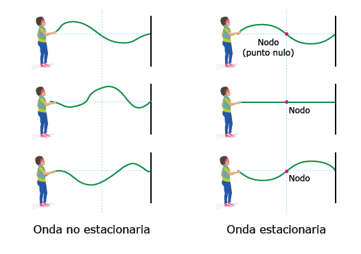Las ondas estacionarias presentan puntos fijos llamados nodos, en donde no hay movimiento. En esta imagen, en los nodos no hay desplazamiento de la cuerda hacia arriba ni hacia abajo.
Las zonas de máxima amplitud, justo entre dos nodos, se conocen como antinodos o vientres. Como las zonas de amplitud cero en una onda estacionaria son nodos, y la longitud de una onda (?) se mide desde una cresta a otra (o desde un valle a otro), la distancia entre dos nodos corresponde a media longitud de onda (?/2).
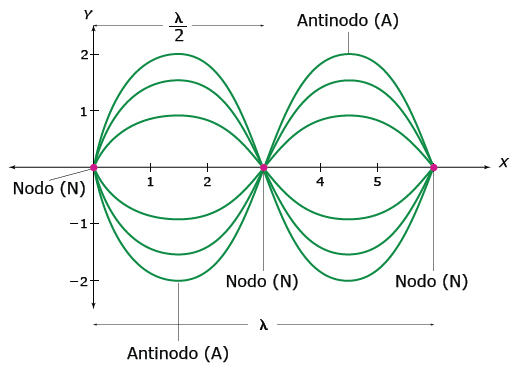La distancia entre dos nodos corresponde a media longitud de onda.
Profundiza
01.1¿Cómo se forman las ondas estacionarias?
Las ondas estacionarias se forman debido a la interferencia de dos ondas de igual amplitud y frecuencia, que viajan en direcciones opuestas. Así, en las mismas regiones siempre hay interferencia constructiva y destructiva; en los nodos hay interferencia destructiva, por lo que la onda tiene una amplitud de onda nula.
Recuerda
Cuando hay superposición de ondas se da el fenómeno conocido como interferencia, en el cual la suma de las ondas produce zonas de refuerzo (aumento de la amplitud) y de cancelación (disminución de la amplitud).
A menudo, las ondas estacionarias se forman por la interferencia de una onda incidente con la onda reflejada.
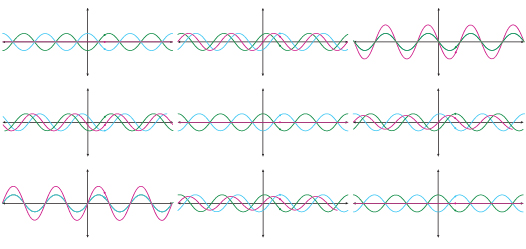La onda azul es la incidente y la verde es la onda reflejada. La onda roja es el resultado de la interferencia y es una onda estacionaria.
Una onda estacionaria se puede formar atando a un punto fijo uno de los extremos de una cuerda y moviendo el otro extremo con la mano de arriba hacia abajo, varias veces. En un principio las oscilaciones serán desordenadas, pero si se encuentra la frecuencia correcta, las ondas que se reflejan en la pared interferirán con las que llegan y se formará una onda estacionaria. Cuando esto ocurra, se verá que las crestas y los valles de la onda se alternan en la misma posición, sin avanzar a través de la cuerda.
Los diferentes instrumentos musicales funcionan produciendo ondas estacionarias, ya sea en una cuerda, en una superficie vibrante o en una columna de aire.
01.2Los tipos de ondas estacionarias
Al igual que las ondas viajeras o simples, las ondas estacionarias pueden ser longitudinales y transversales, según el tipo de ondas que interfieran para formarlas.
Las ondas estacionarias en una cuerda que se mueve de arriba hacia abajo son transversales, en tanto que las ondas estacionarias que se producen por el movimiento de una columna de aire al transmitir sonido son longitudinales.
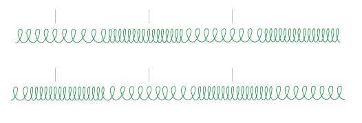Una onda estacionaria en un resorte presentará nodos o zonas en donde el resorte no se mueve, ni durante las etapas de compresión ni de estiramiento.
01.3Consolidación
Actividad para consolidar lo que has aprendido en esta sección.
-
02
Los sonidos musicales
Open or CloseEl sonido se puede clasificar como ruido o como un sonido musical. El ruido es un sonido irregular, producido por las vibraciones irregulares de algún objeto. En cambio, un sonido musical sí tiene regularidad, pues los objetos que lo producen vibran de una forma más constante y armónica.
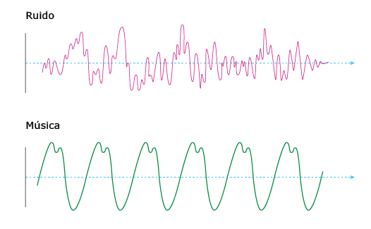Los sonidos musicales presentan alguna regularidad, mientras que el ruido es un sonido desordenado.
La mayoría de los sonidos incluyen algo de ruido. Entonces, para hacer sonidos musicales, también llamados tonos, se requiere regularidad, y la mejor forma de lograrlo es produciendo ondas estacionarias.
La interferencia necesaria para formar ondas estacionarias tiende a eliminar el ruido y a fortalecer la tendencia general de las ondas, produciendo una nueva onda cuyas crestas y valles aparecen en las mismas zonas una y otra vez.
Practica
02.1Las características de los sonidos musicales
02.1.1La altura
La altura de un sonido se refiere a qué tan agudo o grave es, y depende de la frecuencia de la onda sonora. Si la frecuencia es alta, el sonido es agudo, o alto. Si la frecuencia es baja, el sonido es grave, o bajo.
El significado del término tono
En acústica se usa la palabra tono para hablar de la altura del sonido, que se relaciona con la frecuencia. Sin embargo, los músicos también usan esta palabra para referirse a un intervalo musical determinado, es decir, un rango de alturas. Incluso otras personas usan la palabra tono como sinónimo de sonido musical. Entonces es importante entender que el significado exacto de la palabra dependerá del contexto en el que se use.
Recuerda
La frecuencia es el número de vibraciones que realiza una partícula o cuerpo por unidad de tiempo, normalmente un segundo. En términos de ondas, la frecuencia es la cantidad de ondas completas que pasan por un punto determinado por unidad de tiempo. La frecuencia se mide en hertz o hercio (Hz); un Hz es un ciclo por segundo (lo que puede ser una vibración o una onda por segundo)
Las notas musicales se caracterizan por tener alguna frecuencia determinada, de manera que una escala musical es una escala de frecuencias. Así, un Do central se produce por una vibración a 264 Hz. Al cambiar la frecuencia de la onda se cambia la nota musical; del Do central se puede pasar a un Re, con una frecuencia de 297 Hz, y luego a un Fa, a 330 Hz.
Una escala musical es un conjunto ordenado de sonidos. Existen varias escalas musicales, con diferente cantidad de notas y con distintas frecuencias para cada nota. La escala más común en Occidente es la diatónica, que tiene ocho sonidos básicos llamados notas musicales, organizados en grupos conocidos como octavas: Do - Re - Mi - Fa - Sol - La - Si - Do. Esta escala se amplía dando lugar a versiones de diferente frecuencia de una misma nota; por ejemplo, se pueden tener notas Do de 66, 132, 264, 528, 1056 Hz.
Las diferentes escalas musicales
Aunque la escala más común usada en el mundo occidental es la diatónica, en otras partes (del medio y lejano Oriente) se usan escalas diferentes. Además, aun para la escala diatónica existen variaciones, debidas a las características físicas de los instrumentos musicales usados y a los criterios empleados para afinarlos (es decir, hacer que produzcan las notas deseadas), así como la distancia que se asigna entre cada nota. Todo esto produce pequeñas diferencias en la frecuencia de las notas musicales, por ello, un Do central puede en ocasiones tener una frecuencia de 264 Hz, y en otras, de 256 o 262 Hz, por ejemplo.
02.1.2La intensidad
La intensidad del sonido es la característica que percibimos como el "volumen" del mismo (aunque este término no es del todo correcto). Un sonido de alta intensidad se conoce como un sonido fuerte, como el producido por un avión al despegar; mientras que la baja intensidad es percibida como un sonido débil, como un susurro, o el sonido de un lápiz chocando contra el piso al caer.
Desde la física, la intensidad es una media de la cantidad de energía que transporta la onda sonora, y esta cantidad de energía depende de la amplitud de la onda. Cuanto mayor sea la amplitud, mayor será la cantidad de energía de la onda, y mayor será la intensidad.
Las ondas sonoras de gran amplitud se perciben como sonidos fuertes, mientras que las ondas de poca amplitud son los sonidos débiles.
Para ser precisos, la intensidad depende del cuadrado de la amplitud. No obstante, la forma en la que percibimos el "volumen" del sonido no se corresponde del todo con la intensidad. Mientras que la intensidad es un valor objetivo, determinado por una propiedad física medible, la percepción de la intensidad es algo subjetivo, determinado por las condiciones del cuerpo del oyente. Esta percepción de la intensidad, es decir, el volumen que escuchamos, se conoce como sonoridad. De forma aproximada, cuando percibimos que la sonoridad se duplica, la intensidad habrá aumentado ocho veces.
La sonoridad se mide con una unidad llamada bel (en honor del inventor Alexander Graham Bell), aunque comúnmente se usa un submúltiplo de esta, el decibel (db). A pesar de que existen diferencias entre las personas, en términos generales el umbral de audición humano, es decir, el sonido más débil que puede percibir el oído humano, es de 0 db. En cuanto a los sonidos fuertes, a partir de los 140 db el sonido produce dolor. Desde los 85 decibeles, el sonido puede causar daños en el oído, temporales o permanentes, según el tiempo de exposición.
02.1.3El timbre
Es sencillo distinguir el sonido producido por un piano de aquel producido por una guitarra o un violín. Incluso si se está tocando la misma nota, con la misma intensidad, se pueden diferenciar los sonidos de cada instrumento. Esto se debe a otra característica del sonido, conocida como timbre o calidad, que le da un carácter particular a cada sonido.
El timbre depende de la superposición de ondas sonoras. Cuando un instrumento produce una nota, no solo vibra el objeto específico destinado a producirla (como la cuerda de un violín, por ejemplo), sino que también lo hace el resto del instrumento (la madera, el aire dentro de la caja, otras cuerdas, etc.), y cada parte puede vibrar en una frecuencia diferente. El sonido que escuchamos es la combinación de todas esas ondas, y por eso una misma nota sonará diferente en dos instrumentos distintos, pues tienen partes, materiales y tamaños diferentes.
La voz de las personas también tiene un timbre característico, que depende de diversos aspectos del cuerpo de cada quien, y permiten diferenciar una voz de otra.
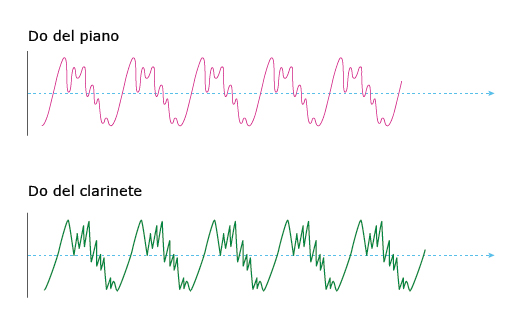Es posible diferenciar el Do producido por un clarinete del Do de un piano, porque cada sonido tiene un timbre diferente.
Los sonidos musicales se componen de un tono fundamental, que corresponde a la frecuencia más baja, y varios tonos más altos y más débiles llamados sobretonos. La frecuencia fundamental determina la altura de la nota, y los sobretonos, llamados también armónicos, dan el timbre.
Las frecuencias de los sobretonos son siempre múltiplos enteros de la frecuencia fundamental. Así, un Do central de 264 Hz puede ir acompañado de sobretonos de 528, 792, 1056 o más Hz. El número preciso de sobretonos y la intensidad de cada uno varían en cada instrumento, cambiando así el timbre o calidad del sonido.
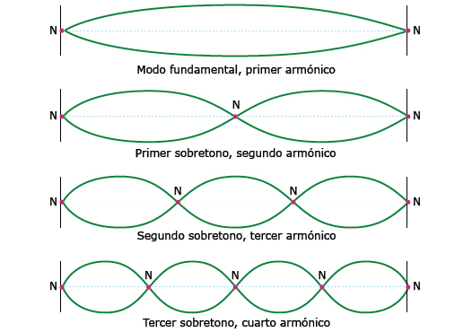La onda más larga que produce un instrumento tiene la frecuencia fundamental. Las ondas del primer sobretono tienen la mitad de la longitud de la onda fundamental, las del tercer sobretono tienen la tercera parte de la longitud, y así sucesivamente.
02.2Consolidación
Actividades para consolidar lo que has aprendido en esta sección.
-
03
Las ondas estacionarias en los instrumentos musicales
Open or CloseLos sonidos de la música son producidos por los instrumentos musicales o por la voz humana, que se comporta como un instrumento musical más, desde el punto de vista de la física. Estos instrumentos permiten generar ondas estacionarias, debido a la regularidad que estas presentan.
Por esto, para hacer un instrumento musical se necesita de un sistema que "encierre" las ondas sonoras, haciendo que aquellas producidas se reflejen e interfieran con nuevas ondas.
Los instrumentos musicales contienen algún objeto suficientemente flexible y tenso para vibrar muy rápido, como una cuerda metálica, una lámina de madera o metal, o los labios y las cuerdas vocales y la laringe de los seres humanos. Esta vibración produce las ondas sonoras. Además, dicho objeto debe poder vibrar con frecuencias diferentes para producir sonidos más altos o bajos. También es importante que las ondas de sonido estén contenidas en un recipiente del tamaño justo para lograr que la interferencia entre las ondas incidente y reflejada produzca una onda estacionaria, y no se forme ruido o los sonidos se cancelen mutuamente. Además, un ancho limitado evita el desplazamiento lateral de las ondas, lo que complicaría mucho el patrón de interferencia.
Los instrumentos musicales se pueden clasificar en tres tipos: instrumentos de cuerda, instrumentos de viento e instrumentos de percusión.
03.1Los instrumentos de cuerda
En los instrumentos de cuerda, el sonido es producido por cuerdas vibrantes. Las cuerdas se hacen vibrar halándolas o frotando un arco sobre ellas. Las cuerdas deben estar tensas para que vibren rápidamente, y dependiendo de su grosor y su tensión formarán diferentes sonidos. Estas vibraciones se transmiten al aire -medio que resulta perturbado-, a través del cual viajan hasta una caja de resonancia que actúa como un tubo cerrado produciendo un efecto de amplificación del sonido. En la caja de resonancia estas vibraciones forman ondas estacionarias transversales debido a la reflexión con la pared de la caja y la interferencia entre estas ondas reflejadas.
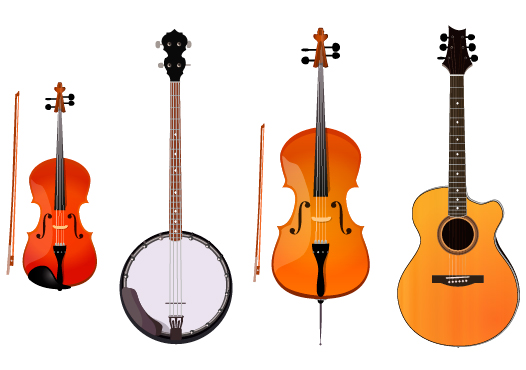Existen muchos instrumentos de cuerda. Algunos de los más conocidos son el violín, el banjo, el violonchelo y la guitarra.
En los instrumentos de cuerda, estas se encuentran atadas al instrumento y fijas en los dos extremos, de tal manera que funcionan como nodos para la onda de la frecuencia fundamental. Esta frecuencia determina la nota de cada cuerda. Para producir una nota específica también debemos tener en cuenta el material, el grosor, la tensión y la longitud de la cuerda.
Cuando el intérprete del instrumento presiona la cuerda con su dedo, este actúa como un nuevo nodo, acortando la parte vibrante de la cuerda, por lo que la frecuencia de la nota cambia, se hace más alta, produciendo un sonido más agudo.
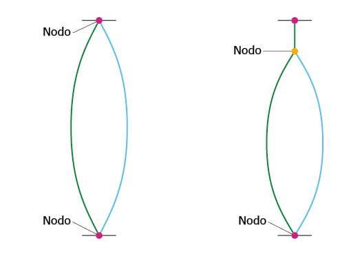Los extremos de la cuerda funcionan como nodos. Cuando se presiona la cuerda contra el instrumento, se forma un nuevo nodo, que cambia la frecuencia de la vibración.
Así, las diferentes cuerdas de un instrumento permiten tener distintas notas, y el repertorio se amplía aún más al presionar la cuerda en puntos específicos.
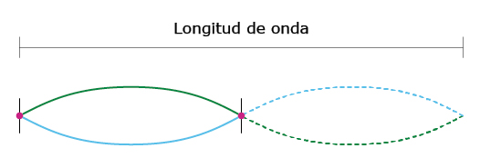Falta pie de foto
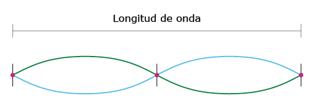Falta pie de foto
03.1.1Las frecuencias de los sonidos en instrumentos de cuerda
Como se dijo, en la cuerda de un instrumento hay por lo menos dos nodos, uno en cada extremo de la cuerda. La onda estacionaria formada por estos dos nodos tiene la frecuencia fundamental de la cuerda, que es la frecuencia más baja.
La longitud de la cuerda es igual a media longitud de onda en la frecuencia fundamental:
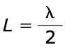Donde: L es la longitud de la cuerda y ? es la longitud de onda.
Si se añade un nodo a la onda estacionaria, se obtiene el segundo armónico de la cuerda. En este caso, la longitud de onda y la longitud de la cuerda son iguales:
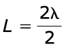Con un nodo más, para un total de cuatro nodos en la cuerda, la longitud de onda es igual a tres medios de la longitud de la cuerda:
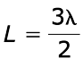Y así sucesivamente. Se puede generalizar la relación entre la longitud onda y la longitud de la cuerda como:
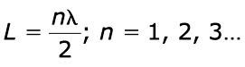El primer armónico corresponde a n = 1, el segundo armónico a n = 2, etc. Si en la ecuación anterior se despeja la longitud de onda, se tiene que:
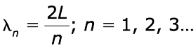A partir de estas expresiones es posible determinar la frecuencia de cada armónico, recordando la ecuación que relaciona la frecuencia (f), la longitud de onda y la velocidad de la onda (v):
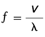Entonces, tenemos que:
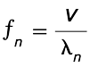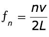Según esto, para el primer armónico la frecuencia es:
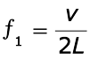Por su parte, la frecuencia del segundo armónico es:
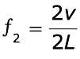Por tanto, podemos reescribir la ecuación de las frecuencias armónicas como sigue:
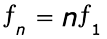Esto significa que la frecuencia de cada armónico es un múltiplo de la frecuencia fundamental. El segundo armónico tiene el doble de frecuencia que el primero, y el tercer armónico tiene una frecuencia tres veces mayor al primer armónico, es decir, tiene tres veces la frecuencia fundamental.
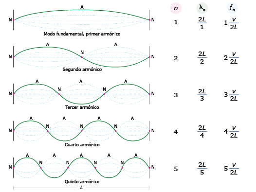En su frecuencia fundamental, la onda estacionaria tiene una longitud de onda que es el doble de la longitud de la cuerda.
Normalmente, en los instrumentos musicales existe más de una cuerda, y los intérpretes del instrumento giran unas clavijas para apretarlas o aflojarlas, ¿por qué?
La frecuencia fundamental del sonido producido por una cuerda depende, como ya se vio, de la longitud de la misma, y a partir de esta se forman los demás armónicos.
Sin embargo, la fórmula usada para calcular la frecuencia contempla la velocidad de las ondas sobre la cuerda:
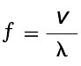Según esta ecuación, a mayor velocidad, mayor frecuencia, lo que implica un sonido más agudo. Y la velocidad de la onda depende de la tensión de la cuerda (T) y la densidad lineal de la misma (µ):
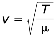Según esta ecuación, la velocidad de la onda, y por tanto su frecuencia, aumenta con la tensión de la cuerda y disminuye con la densidad.
La densidad lineal de la cuerda es la relación entre su masa y su longitud:
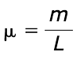Entonces, en dos cuerdas de igual longitud, la mayor densidad lineal la tendrá la que tenga mayor masa. Normalmente, en los instrumentos esto se traduce en cuerdas más gruesas.
Resumiendo, cuanto más se tensa una cuerda, mayor es la vibración y más agudo es el sonido, y cuanto más gruesa es la cuerda, menor es la frecuencia y se produce un sonido más grave.
Las cuerdas más delgadas y más tensas son las que producen notas más agudas, pues la cuerda vibra con una frecuencia mayor.
03.2Los instrumentos de viento
En los instrumentos de viento, la vibración se produce directamente en una columna de aire contenida dentro de un tubo largo y delgado. Aunque el instrumento en sí mismo también vibra un poco, la mayoría del sonido es producido por el aire dentro del instrumento.
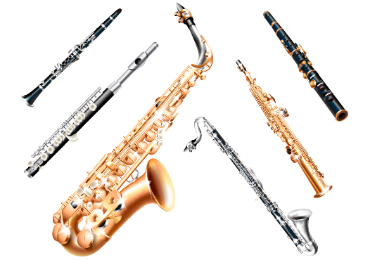Los instrumentos de viento funcionan al hacer vibrar columnas de aire.
Así como la laringe en el cuerpo humano sirve para producir la voz, el tubo del instrumento sirve para filtrar y reflejar las ondas, de manera que se produzcan ondas estacionarias. Estas ondas son longitudinales, pues implican el avance y retroceso de una columna de aire a lo largo del tubo, similar al movimiento de un resorte.
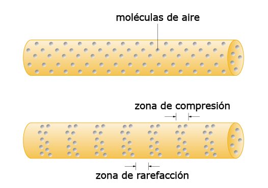Las ondas sonoras son ondas longitudinales formadas por compresiones y expansiones (rarefacciones) del aire.
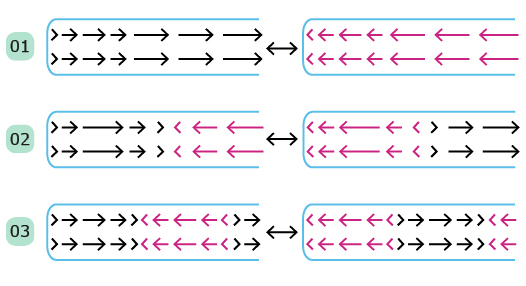Los instrumentos de viento forman ondas estacionarias longitudinales. En el tubo 1 hay un nodo, en el tubo 2 hay dos nodos, y en el tubo 3 hay tres nodos.
En los instrumentos de viento, normalmente, el aire entra por un extremo llamado boquilla, y sale por el otro, llamado campana, que es más ancho que la boquilla. La vibración del aire puede producirse por los labios del intérprete, o por una o dos lengüetas dentro del instrumento que vibran cuando entra aire.
Entre los dos extremos está el tubo, que es el lugar en donde se forma la onda estacionaria. El largo del tubo determina la longitud de la onda fundamental. A partir de las divisiones de esta onda se construyen los demás armónicos. Por su parte, la forma y el material del tubo determinan el timbre del sonido.
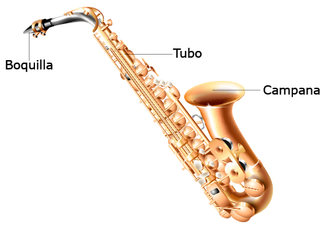En los instrumentos de viento el aire entra por la boquilla, se mueve por el tubo, en donde se forma la onda estacionaria, y sale por la boquilla.
El instrumento musical no debe ser cerrado en los dos extremos, pues la onda estacionaria dentro del tubo no transmitiría suficiente movimiento al aire para que llegue un sonido claro hasta el oído.
Es posible entonces tener instrumentos con un extremo cerrado y uno abierto, o los dos extremos abiertos. De esta manera, en un extremo abierto el aire no se detiene, por lo que allí no hay nodos. De hecho, en los extremos abiertos hay antinodos.
En un tubo con un extremo abierto la onda con la frecuencia fundamental tiene un nodo en el extremo cerrado y un antinodo en el extremo abierto. En un tubo con dos extremos abiertos, en ambos hay antinodos, y el nodo de la onda fundamental está en el centro del tubo.
Por supuesto, esto no significa que la onda estacionaria acabe en el extremo del tubo. Tanto en tubos abiertos como en cerrados, el antinodo al final del tubo es seguido por un nodo, que está en el aire por fuera del instrumento.
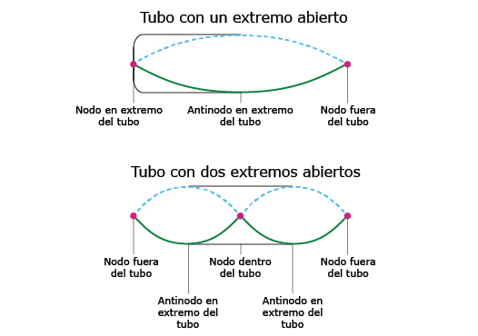Las ondas estacionarias en los tubos tienen antinodos en los extremos abiertos y nodos en los extremos cerrados. Por facilidad, las ondas longitudinales en tubos se representan como ondas transversales.
Los nodos de presión y movimiento
Cuando una columna de aire vibra, hay contracciones y rarefacciones de la columna. En los nodos, en donde no hay movimiento del aire, la presión es máxima cuando hay compresión, y mínima cuando hay rarefacción. En cambio, en los antinodos o vientres siempre hay movimiento del aire, por lo que la presión es constante. Esto significa que un nodo de amplitud de la onda, es decir, un nodo de movimiento del aire, es también un antinodo de presión. De manera correspondiente, un antinodo de movimiento es un nodo de presión.
03.2.1Los tonos armónicos en los tubos con un extremo abierto
Como entre dos nodos hay una distancia de media longitud de onda, la parte de la onda estacionaria fundamental que está dentro de un tubo con un extremo cerrado tiene una extensión de un cuarto de longitud de onda. Esta parte de la onda, además, es igual al largo del tubo L, por lo que:
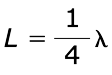Esto también significa que la onda completa mide cuatro veces el largo del tubo. El segundo armónico se obtiene cuando se añade un nodo dentro del tubo; al hacerlo, la longitud de onda disminuye (y, por tanto, la frecuencia aumenta), resultando en:
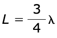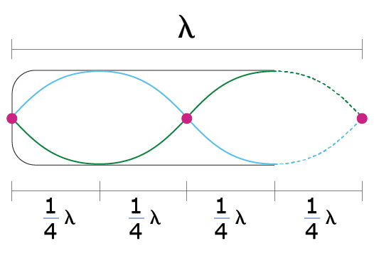Si hay dos nodos en la onda estacionaria, el largo del tubo es igual a tres cuartas partes de la longitud de onda.
Con un segundo nodo, la relación entre la longitud del tubo y la longitud de la onda quedaría:
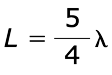Y con un tercer nodo, se obtiene:
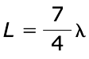Y así sucesivamente. Se puede entonces generalizar la relación entre las longitudes de la onda y el tubo de la siguiente manera:
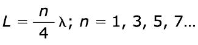Si despejamos la longitud de onda, tenemos que:
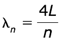Dado que la frecuencia de una onda es igual a la relación entre su velocidad y su longitud de onda, podemos usar la anterior expresión para encontrar la frecuencia fundamental, y la de cada uno de los demás armónicos. La frecuencia fundamental sería:
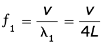Siendo f la frecuencia, v la velocidad del sonido en el aire y L la longitud del tubo. Si usamos la misma fórmula para las demás frecuencias encontramos que:
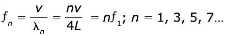Esta expresión quiere decir que cada armónico sucesivo tiene una frecuencia que es un múltiplo impar de la frecuencia fundamental. Con un tubo cerrado no es posible obtener un armónico cuya frecuencia sea, por ejemplo, el doble de la frecuencia fundamental.
En los tubos con ambos extremos abiertos, la onda fundamental tiene un nodo en la mitad y dos antinodos en cada extremo del tubo, por lo que la longitud del tubo es igual a la mitad de la longitud de onda.
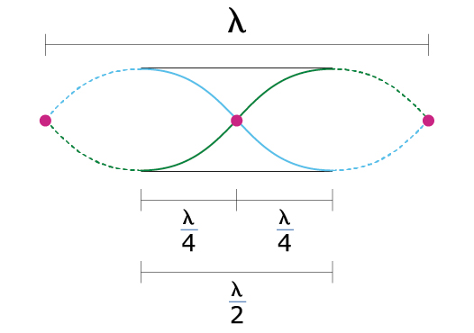En un tubo con los dos extremos abiertos, la longitud de onda del primer armónico es igual al doble de la longitud del tubo.
El segundo armónico en un tubo abierto se logra al añadir un nodo, de forma que queden dos dentro del tubo. En ese caso, la relación entre la longitud de onda y la longitud del tubo es:
Y con un tercer nodo obtenemos el segundo armónico, en donde
Y así sucesivamente. La forma general de esta ecuación para todos los armónicos es:
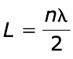Tal y como se hizo antes, despejando la longitud de onda, usando la ecuación para la frecuencia y calculando la frecuencia de la onda fundamental, se tiene que:
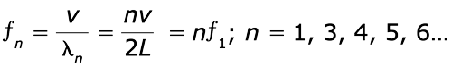Como se puede apreciar, en este caso n no solo toma valores impares. Esto significa que, en un tubo cerrado, la frecuencia de los armónicos puede ser cualquier múltiplo de la frecuencia fundamental.
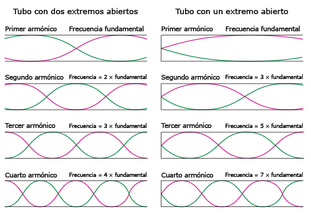En los tubos abiertos en un solo extremo solo se forman los armónicos con múltiplos impares de la frecuencia fundamental. Los tubos con dos extremos abiertos presentan armónicos con múltiplos tanto pares como impares.
La frecuencia de la onda estacionaria se puede alterar cambiando la longitud de la columna de aire. Esto se logra con llaves o botones que cierran secciones del tubo, acortando la columna. Cuando se cierra una llave se produce un efecto similar al de presionar una cuerda en un instrumento de cuerdas: la menor columna tendrá una onda de mayor frecuencia, lo que produce un sonido más alto.
También es posible alterar la longitud de la columna de aire por medio de orificios que se cierran con los dedos: si el orificio está abierto, el aire escapa por allí, y la onda estacionaria termina en ese punto. Si el orificio se tapa, el aire se ve obligado a seguir por el tubo, lo que produce una columna más larga.
El intérprete del instrumento acortará y alargará la columna de aire para variar la las notas producidas y así interpretar la melodía.
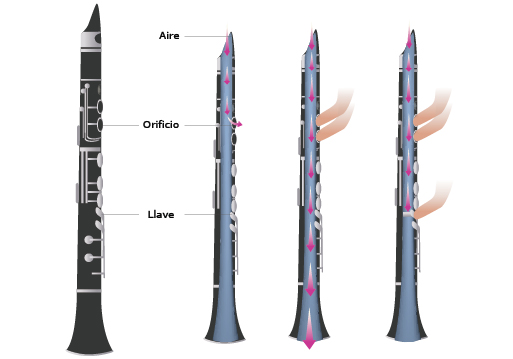En un saxofón se acorta la columna de aire presionando unos botones o llaves que hacen descender un pistón que acorta la columna de aire. En una flauta, al tapar los orificios se evita que el aire salga, haciendo que la columna de aire sea más larga.
03.2.2La voz humana
El sistema fonador, que es el responsable de la producción y modulación de la voz, involucra diferentes estructuras, y su funcionamiento es complejo. A menudo, se le considera como un instrumento de viento, aunque hay quienes disputan este punto de vista.
El aire que sale de los pulmones sube por la tráquea y llega a la laringe, en donde encuentra las cuerdas vocales. Estas en realidad no son cuerdas sino membranas que se pueden abrir y cerrar, o quedar entrecerradas. Según el grado de apertura de las cuerdas o pliegues vocales, así como del grado de tensión que tengan, el sonido se modifica, por lo que es posible modular la voz.
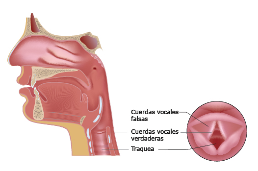En el cuerpo humano hay dos pares de cuerdas vocales: las "falsas", que cierran la laringe para evitar la entrada de comida al sistema respiratorio, y las verdaderas, que modulan la voz.
Como las cuerdas vocales de los hombres son más gruesas que las de las mujeres, su vibración es más lenta y la voz es más grave, es decir, de frecuencia más baja. Los niños tienen cuerdas vocales delgadas, por lo que su voz es aguda, similar a la de las mujeres. En el caso de los hombres, durante la pubertad las cuerdas se engrosan y la voz se hace más grave.
En los coros, las voces femeninas y masculinas se clasifican según la frecuencia que tengan (las voces infantiles se consideran femeninas). Existen tres categorías básicas para las voces femeninas: soprano (la más aguda), mezzosoprano y contralto. Por su parte, las voces masculinas se clasifican en tenor (la voz más aguda), barítono y bajo (la voz más grave).
03.3Los instrumentos de percusión
En los instrumentos de percusión, estos se golpean para producir ondas sonoras en una superficie. En el caso de instrumentos como los tambores, lo que vibra es una membrana, de manera más o menos similar a una cuerda, pero en un patrón más complejo por darse en toda la superficie. En otros instrumentos, como el triángulo, la vibración que produce el sonido se da en todo el instrumento.
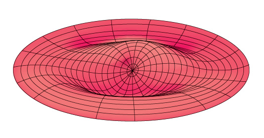Las vibraciones de los instrumentos de percusión siguen los mismos principios de las cuerdas o las columnas de aire, pero su descripción es más compleja.
No obstante, en muchos instrumentos de percusión no se producen ondas estacionarias; en vez de eso, se produce ruido rítmicamente. Esto significa que muchos instrumentos de percusión no generan notas definidas, ni tienen armónicos que se puedan manipular.
Otros instrumentos están construidos de manera que su forma y tamaño sí producen ondas estacionarias que generan notas musicales. Un ejemplo es el xilófono.
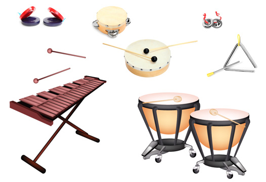La mayoría de instrumentos de percusión produce ruido, sin embargo, al generarse rítmicamente hacen parte de la música.
En cualquier caso, el tamaño del instrumento sí altera el sonido producido: instrumentos más grandes producen mayores longitudes de onda y, por tanto, sonidos de mayor intensidad.
03.4Consolidación
Actividades para consolidar lo que has aprendido en esta sección.
-
04
Competencias
Open or ClosePon a prueba tus capacidades y aplica lo aprendido con estos recursos.
-
Fin de unidad:
Open or Close
repaso